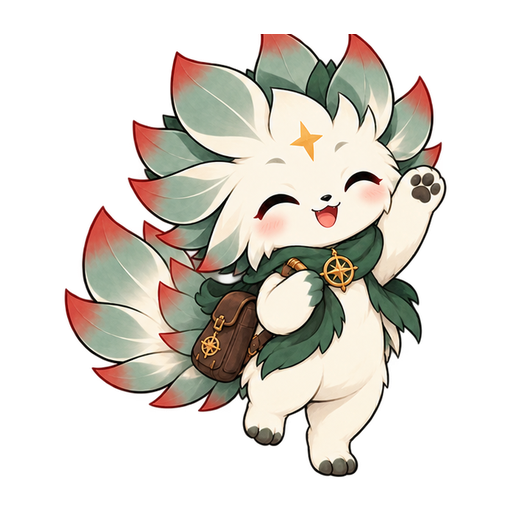

Introduction to R
A foundation in R: installation, data types, functions, and reading and writing data.
Nature × Data × People
Welcome to my site! My name is Phemelo Rutlokoane, an MSc student at the University of the Western Cape currently researching climate change linked extreme events in coastal marine environments. My interests lie in using geospatial data to understand the living world, from marine ecosystems to terrestrial landscapes.
Phemelo Rutlokoane · Ecologist & Remote sensing specialist
The landscapes connected by my work in ecology, data and conservation.

My research companion
Silvi is my conservation companion. She was inspired by the silvertree I did my my Honours research on. Her star compass are inspired by the nature of this site – Hyperion, the Greek Titan of heavenly light, and the compass that guides explorers.
"Silvi is there to introduce the ideas behind the work I have done: following krill, watching wildlife and exploring the tools of ecology. She isa familiar face, with a different role in each project."
Research scope / 2025

BioSCape · Hyperspectral · LiDAR
Monitoring Leucadendron argenteum populations: exploring opportunities offered by emerging technologies. This research project used NASA’s AVIRIS-NG imaging spectroscopy and LVIS LiDAR to identify and map out the remaining populations of this endemic species across Table Mountain. This research forms part of the BioSCape project, which aims to understand the ecology of the Cape Floristic. I collected field data on silvertree populations and co-occurring vegetation and used this information to train machine learning models to predict the distribution of silvertrees across the National Park. The results of this research will inform conservation strategies for monitoring this iconic species and contribute to our understanding of the biodiversity of the Cape Floristic Region.
Read the paperWhat I do
These mark the fields I have worked in and am comfortable to tackle in future research.
Multispectral, hyperspectral and LiDAR analysis, from Landsat and Sentinel-2 to AVIRIS-NG.
Vector and raster workflows, cartographic design and spatial statistics in R, QGIS adn ArcGIS.
Species distribution modelling, diversity metrics and ecological survey design.
Time series, multivariate statistics and machine learning applied to ecological data.
Sea surface temperature, marine heatwaves and marine coldwaves, and oceanographic patterns in NOAA datasets.
Camera trap analysis, animal movement and behaviour, and population monitoring in terrestrial and marine ecosystems using Bushnell camera traps and BRUVS.
Reproductive work
A foundation in R: installation, data types, functions, and reading and writing data.
An introduction to working with vector and raster spatialdata, and visualising spatial patterns in R. Showcases the type of spatial maps and analyses that can be done with the sf and raster packages.
A practical introduction to machine learning for ecologists — core concepts, model types, and the first end-to-end workflow in R.

The person behind the work
An MSc student in Biodiversity and Conservation at the University of the Western Cape. I work where geospatial data meets ecology, and share the methods along the way.
More about me